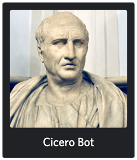

About the project

This is a webpage detailing my github project "Cicero Bot". A bot written in python3 using the discord.py rewrite library.
It's purpose is providing various functionalities to the Rough Roman Memes discord server. Features include but are not limited to:
- issue tracking system in the form of motions with the possibility to vote on them
- monthly anonymous elections with focus on anonimity and protection from rigging methods such as VPN
- unit conversions
- rendering of various pie charts
- various text commands